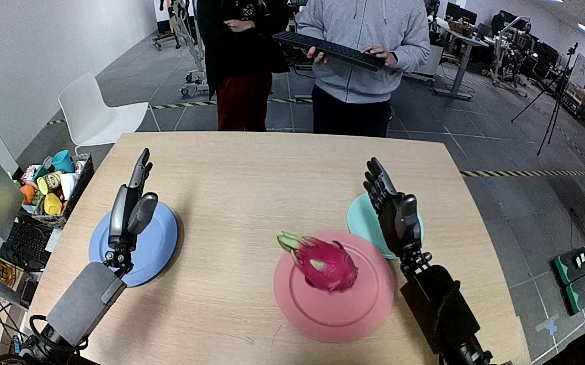

NVIDIA GR1 · 48
Video 48

Visual review action_review.json
{
"prompt_protocol": "humanoid_action_v1",
"prompt_provenance": "visually_authored_from_video_and_initial_frame",
"reviewed_contact_sheets": [
"sheet_001.jpg"
],
"inspected_frame_stride": 2,
"inspected_sampled_frame_count": 60,
"initial_scene": "Forward-facing view over both robot forearms toward a table. A pink dragon fruit with green tips rests on the pink plate; an empty teal plate is beyond it. The left hand is open above a separate blue plate and the right hand is initially open beside the teal plate.",
"observed_sequence": [
{
"source_frame_interval": [
0,
31
],
"action": "Both hands remain open; fruit remains on the pink plate.",
"confidence": "high"
},
{
"source_frame_interval": [
32,
64
],
"action": "Right forearm reaches inward toward the fruit; the open hand surrounds the fruit over the pink plate. Left hand stays clear.",
"confidence": "high"
},
{
"source_frame_interval": [
65,
92
],
"action": "Right fingers close around the fruit and secure it; fruit changes orientation while still over the pink plate.",
"confidence": "high"
},
{
"source_frame_interval": [
93,
106
],
"action": "Right hand lifts the fruit clear of the pink plate and carries it toward the teal plate.",
"confidence": "high"
},
{
"source_frame_interval": [
107,
119
],
"action": "Right hand lowers the fruit onto the teal plate and opens its fingers. At the end the fruit rests on the teal plate with the open hand still alongside it.",
"confidence": "high"
}
],
"arm_hand_roles": {
"right": "Active hand: reaches to the pink plate, closes fingers around the dragon fruit, lifts and transports it, lowers it onto the teal plate, then opens.",
"left": "Remains open over the blue plate; does not touch the fruit or assist the transfer.",
"coordination": "Single-hand manipulation; no hand-to-hand transfer or person interaction."
},
"anatomical_side_evidence": {
"evidence": "The initial forward-facing robot camera view looks between the paired forearms extending from the lower foreground. The active hand is attached continuously to the forearm entering from the robot right foreground; the opposite forearm remains on its left. Neither arm crosses the body centerline during this transfer. Visible articulated fingers and opposing thumb identify the hand rather than a parallel-jaw gripper.",
"confidence": "high",
"limitations": "Shoulder attachments and torso are outside this camera view; identification uses the paired forward-facing arm configuration and continuous forearm tracking."
},
"evidence_frame_indices": [
0,
44,
76,
96,
108,
119
],
"initial_frame_inspected_native": true,
"initial_frame_path": "NVIDIA_GR1_100/48/generation input/first_frame.png",
"inspection_coverage": "Viewed the complete contact sheet containing all 60 stride-two frames from 0 through 118, native source initial PNG, and native frames 44, 76, 96, 108 and 119.",
"complete_source_video_reviewed": true,
"coordination": "Right hand alone transports the fruit; left hand remains idle.",
"terminal_state": "Dragon fruit rests on the teal plate. The right fingers have opened around it, and the hand remains adjacent; no later hand withdrawal is shown.",
"uncertainties": [
"Exact first support contact with the teal plate is partly occluded by the hand; the terminal open fingers and fruit position on the plate support observed placement. Shoulder attachments are outside the camera view."
],
"annotation_discrepancies": [],
"selected_execution_status": "success",
"outcome": "Observed fruit transfer from pink plate onto teal plate, with right fingers opening at the ending.",
"video_id": "48",
"dataset": "NVIDIA_GR1_100",
"dedicated_review_agent": "review_gr1_48",
"review_source_video": "NVIDIA_GR1_100/48/original/original.mp4",
"source_frame_count": 120,
"source_fps": 20.0,
"native_detail_frames": [
44,
76,
96,
108,
119
],
"world_model_prompt": "The robot uses its right hand to grasp the pink dragon fruit on the pink plate, closing its fingers around the fruit and lifting it clear. It carries the fruit to the teal plate, lowers it onto the plate, and opens its fingers, leaving the fruit resting there with the right hand beside it. Keep the camera fixed; preserve robot geometry, physically valid joint motion, and normal gripper opening and closing.",
"original_task_instruction": "Use the right hand to pick up pink dragon fruit from pink plate to teal plate.",
"selected_segment": {
"start_frame": 0,
"end_frame_exclusive": 120,
"reason": "Complete original single-task reference; no cropping or trimming requested."
},
"source_video_sha256": "4708fefcf66fc4f6041dd0a1ae86d0a87eb360e3af112cd49ab6d33f8c4609d1",
"review_completed_at": "2026-10-13T18:08:45.659989+00:00"
}